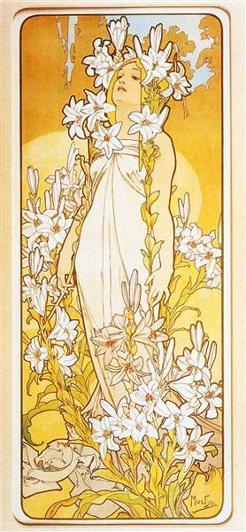

Portfolio / 2026 — Personal site
ASUKAGOO
Portfolio
Asukagoo studio — personal archive project
Portfolio — 作品集
作品集
这里分成两条线索：著作是文字与研究的排布，ArTech 则是艺术与技术的同一张桌面——一半是蒸汽波的夜、网格与落日，一半是能点、能走、能计时的小机器。前者借新艺术运动的曲线装订论点，后者用线框去试探画面，也用代码去试探它能不能真的跑起来。
Writings — 著作
Écrits文字的花饰
新艺术运动相信：没有一条线应该只是功能。文字也一样。论文的论点、脚本的停顿、策划案的分段，都可以像藤蔓一样被编排——先抓住视线，再把读者带进论证里。
-
《示例论文：算法时代的意见气候》
从一则经典假说出发，重读推荐算法如何重排意见气候，以及「多数」是怎样被计算出来的。
-
「示例影像」城市短片文案
把一座城的褶皱写成六十秒的旁白：一条巷子、一次拆迁、一段没有讲完的家史。
-
《示例调研：河道工程的产业链》
沿一条河道走完产业链的上游与下游，把工程口径翻译成读者能判断的事实。

ArTech — 艺术 × 技术
艺术ART/TECH
一轮用线画出来的落日、一条压在地平线上的激光、一层向远处收束的网格——蒸汽波把它们反复印到起毛边，既不假装未来，也不真的怀旧。而这一页的下午还放着一个真的能按的钟：艺术负责做梦，技术负责让它跑起来。
把落日、网格与过期的商场音乐
压进同一张平面。
蒸汽波是一套语气：深蓝的夜、用线画出来的落日、压在地平线上的青绿激光、无限延伸的青色网格。它承认自己廉价，也因此显得诚实。
它不复刻过去，也不许诺未来——只把八十年代的承诺做成一张过曝的明信片，让人明知是假的，也愿意在里面站一会儿。
这一页叫 ArTech：上半页只有画面，下半页放一个能跑的钟。同一套霓虹语言，一边用来骗眼睛，一边用来让时间真的走。
拾光 Lumos
意象专注时钟
ArTech 的另一半不挂在墙上，它在走。25 分钟的专注环、随六套配色换季的光核、任务与统计——全部由一个 HTML 文件跑起来，没有服务器、没有账号、不联网也能用。
下面这一版是能直接点的原物，不是截图。按下「开始专注」，它就真的开始计时。
下一格空着 —— 等下一个技术实验做完再放进来。
About — 关于
关于我
以下都是示例内容，只用来演示版式。
一张照片、几句自述、几张贴纸，和三条时间线——拼起来是一个虚构的人。
Portrait — Example City, 2026
先把事情看清楚，再决定怎么讲它。
这是一个占位版的自我介绍：一名网络与新媒体专业的学生，在读。习惯在三种工具之间切换：写字的、排版的、跑代码的。对我来说它们不是三个专业，而是同一个问题的三种问法。
示例设定里做两件事：把城市里的细节做成影像与文字（「示例影像」系列），以及把界面和信息结构做得更清楚——后者正在往前端与产品的方向学。
- 「示例影像」城市短片系列，仍在更新
- 这个个人网站——你正在看到的这一页
- 一份能交付的前端 / 产品作品集，筹备中
入学某大学
网络与新媒体专业。第一次意识到「传播」既是理论，也是手艺。
开始更新「示例影像」
用短视频讲一座城市的褶皱：一条巷子、一次拆迁、一段家史。
转向前端与产品
把审美换成可交付的界面，正在准备第一份互联网实习。
Contact — 联系
来信
Écrivez-moi
通常 24 小时 内回复 · 欢迎实习、项目与合作邀约